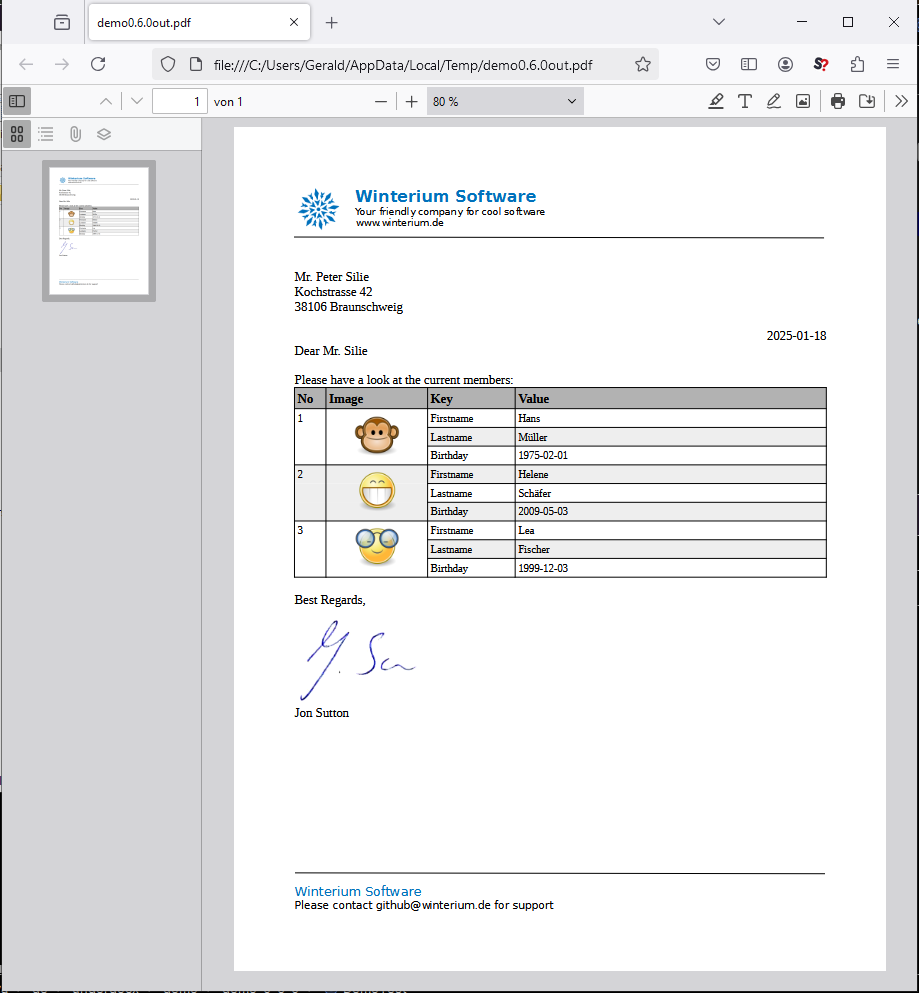

Demo
Here is an example to load and manipulate a LibreOffice document with multiple placeholders. Some of these placeholders stand for simple texts, other represent an other document that shall be imported. Images can also represent placeholders that shall be exchanged:
// Prepare document and engine
OdtContainer doc = new OdtContainer(is);
DefaultODTEngine engine = new DefaultODTEngine(doc);
// Alias placeholders
engine.registerStringReplacement("addHeaderAndFooter", "${Export $resource:\"master\"} ");
engine.registerStringReplacement("membersTable", "${Import $resource:\"membersTable\"} ");
// Variables / Data
engine.pushLeafVariable("membersTable", readResource("membertable.odt"));
engine.pushLeafVariable("master", readResource("master.odt"));
engine.pushLeafVariable("signatureImage", readResource("signature.png"));
engine.pushVariable("persons", createPersonsData());
engine.pushVariable("address", "Mr. Peter Silie\nKochstrasse 42\n38106 Braunschweig");
engine.pushVariable("contact", "Mr. Silie");
engine.pushVariable("signature", "Jon Sutton");
// Execute the engine
engine.run();
doc.save(os);
doc.writePDF(pos);
You can find the comple JUnit test case of this demo right here:
Github - Underdocx - DemoTest